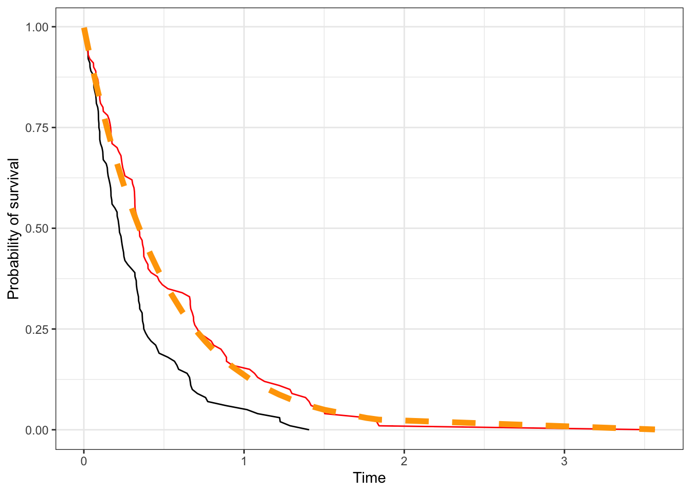
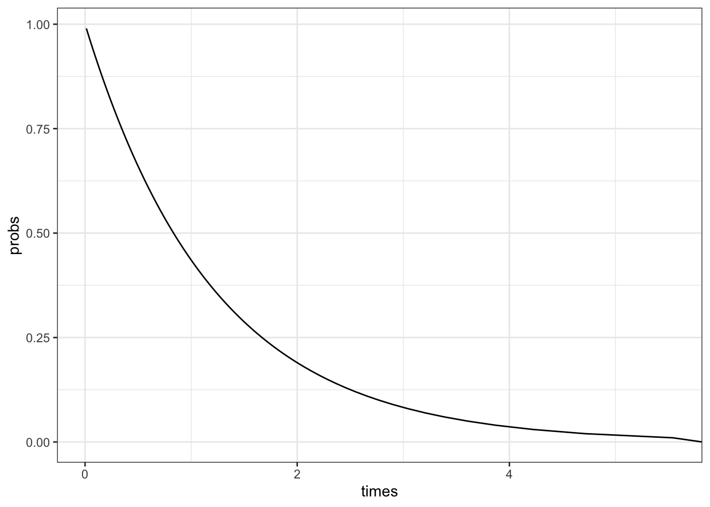
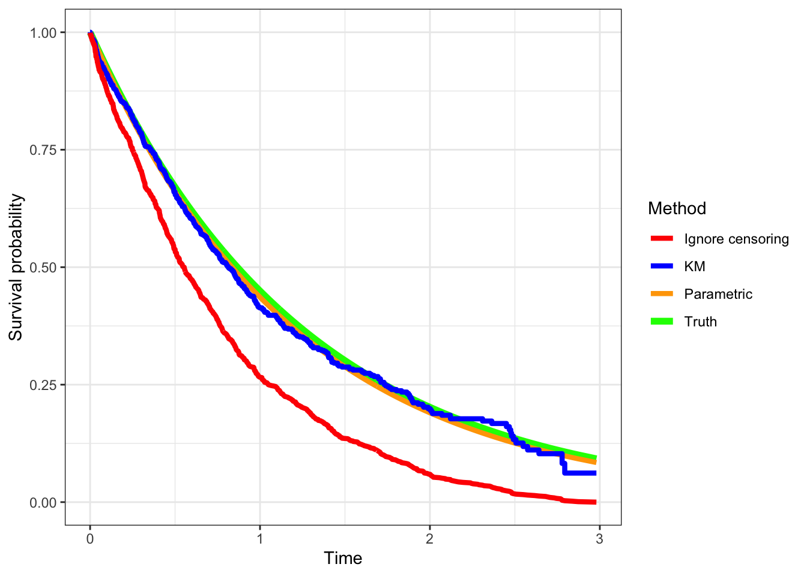

A common interest across a wide range of fields is to understand when and why things fail. In engineering, that can mean how long will a component of a car last with normal use. In healthcare, that can mean how long does a person with diabetes live. For many businesses, it can mean how long does an employee stay with the company, or how long does a subscriber stay with a plan. The general question is, how long before something (an event) happens. The adjacent question is, what affects how long before the event happens. Does metformin help a diabetic prolong the time before blindness and neuropathy set it? Does some incentive tend to keep subscribers subscribed longer? Does the Mediterranean diet increase the time until one might get a heart attack?
Looking at failure times and its influencers spawned a different way of using statistics and data, called survival analysis in the statistics/biomedical worlds and reliability in engineering, and churn analytics in business.
There are several things that make survival (which we’ll use here instead of the more general failure time) data unique.
First is that it is always considered to be positive, since we have a time 0 when we start measuring time. This leads to particular choices in terms of the probability distributions that we consider when modeling survival analysis.
Second is that we often have to deal with missing data in a very particular sense, or perhaps data with incomplete information is a better way to put it. In practice, we can’t follow study units (humans, components, customers) forever, and so we stop tracking at some time point. At that point, several units might not have experienced failure yet, but we would reasonably believe that they would fail if we followed them long enough. So we only know, for these units, that they did not fail until the time at which we stopped following them. That is information, but it’s not the full information we would like. Survival analysis methods account for this partial information issue, which is formally called censoring. We’ll talk about this in more detail in a bit
A similar issue in survival data is truncation. Suppose we’re doing a study where we follow patients from the start of their leukemia diagnosis to death. Some patients my enter the study from another hospital, where their diagnosis has happened, but they entered the study some time after. Their “clock” on the study started later than 0, and we consider their times truncated.
Third is how we model covariates that affect (or perhaps cause) changes in survival times. Survival analysis uses statistics and metrics that are not used in other branches of statistics, thus requiring a bit of learning and a re-evaulation of our intuition.
Fourth is that the descriptive statistics and graphs we use are different from what you may have learned, both in terms of describing the data and in terms of evaluating model goodness-of-fit and residual analyses. Things get a bit specialized.
In this chapter we approach the different ways of describing and modeling survival time itself, including reasonable probability distributions, statistics and how we look at changes or differences in survival curves. The next chapter will explore how we evaluate how features/covariates can affect survival times, and how we model that effect and evaluate how well our models do. We will focus on approaches that look at survival time as continuous, and acknowledge that approaches that use discretized time do exist and can also be useful.
Survival data
We start by following a cohort of patients from the time of admission into a study and see when they die. As the weeks go by, some patients die, and some patients leave the study either by choice or are lost to followup. At 12 weeks we stop the study and know that some of the patients we followed are still alive then. We can show this data graphically.
Survival analysis generally is done on prospective data
Follow-up time in a leukemia cohort, sorted by time of follow-up
The time when we start counting time, so-called time 0, may not always be obvious, and in an actual study may need to be defined. In many clinical studies, time starts either when the disease is diagnosed or when the patient is admitted to hospital. However, as you can imagine, that start time is actually different for different patients. We typically align the times so that the agreed-upon start time for time counting is always denoted as zero, regardless of what calendar time it occurs.
In a hypothetical clinical study, we see how followup actually occurs in the left panel, where the dotted line denotes when the study stopped. Analytically, however, we transform the same observations on the study time scale to align all start times to 0, as in the right panel. Here, censoring is represented as an open circle. From Aalen, Borgan and Gjessing, 2008.
Risk sets
At any given time \(t\), the risk set is defined as the group of individuals who are still at risk in the study cohort to experience an event. This means, we include in the risk set at time \(t\) everyone in the study that we are still following at time \(t\). Anyone who has experienced an event before time \(t\), or individuals who are censored before time \(t\), are not included in the risk set at time \(t\).
A risk set is defined at every time during the period of the study.
Censoring
There are generally 3 kinds of censoring that we consider:
Right censoring, where we know that a subject has survived up to a certain time, but we don’t observe the time of the survival event. This is by far the most common form of censoring and what most analyses account for.
Interval censoring, where we know that the event occurred between two time points, but we don’t know the exact time of the event. This is common for many practical studies, where, for example, we only know that cancer recurrence happened between two visits. Interval censoring can be important to account for in analysis, but it is often ignored if the time intervals between observations are reasonably small.
Left censoring, where we know that the event occurred before a certain point. For example, we find out a person has died because he didn’t show up to his next scheduled doctor’s visit.
From Turkson, Aylah-Mensah & Nimoh (2021). https://doi.org/10.1155/2021/9307475
A fundamental assumption that we make in incorporating censoring is that
the censoring is independent of the survival outcome
that is, whether you get censored or not, either during the followup period (lost to followup) or at the end of the study (administrative censoring), does not affect whether or not you experience the event, i.e. noninformative censoring. This is often seen as a reasonable assumption, especially if censoring happens for reasons extraneous to the disease under study, like, for example, the study stops on a certain date.
There are instances where this assumption fails, however. For example, patients might be more likely to drop out of a study if they are too sick to take the medication or go to hospital visits, so their censoring is related to the severity of their illness and likely is associated with their risk of dying. This is why the independent censoring assumption must be reasoned and checked. There are some techniques around accounting for such informative censoring, that will often include weighting schemes like we saw in the propensity score weighting. We’ll come back to this in a future section.
The nature of survival data
Survival data is actually stored as a bivariate entity\((T, \delta)\) , where \(T\) denotes the observed survival time and \(\delta\) is a 0-1 variable that denotes whether we observed the event(1) or censoring (0) at the end of the observed survival time. We need both to evaluate survival time.
Clinical data in CDISC format that can go to the FDA
When dealing with data from registered clinical trials, the survival (or time-to-event data, denoted TTE) has to conform to a standard format based on the agreed-upon CDISC standard. In this format, you have a censoring variable (CNSR) rather than an event variable which is coded in reverse of the \(\delta\) above, i.e. it codes being censored as 1 and having the event as 0. So one of the first lines of code we write is cens <- 1-CNSR to accommodate the standard censoring variable that or assume.
Survival distributions
Statistics
We look at different statistics that capture different aspects of the survival distribution, i.e, the distribution of survival times. In the following we denote the survival time by the random variable T, which has some distribution on the support \(T \geq 0\).
Survival function
\(S(t) = P(T > t) = 1 - P(T \leq t) = 1 - F(t)\) for \(t \geq 0\) is the probability that individual survives for at least time t
Hazard function
The hazard function \(h(t)\) is the instantaneous chance that you will fail at time t given you have survived till then. \(h(t) = P(T = t | T \geq t) = \frac{f(t)}{S(t)}\) where \(f(t)\) is the p.d.f of the survival distribution (\(f(t) = \frac{dF(t)}{dt}\)). It can also be defined as \(h(t) = -\frac{d}{dt} \ln(S(t))\).
Cumulative hazard function
The cumulative hazard function \(H(t) = -\ln(S(t)) = \int_0^\infty h(u)du\) is, essentially, the sum of all the chances of failing over the period of observation. Mathematically, we can turn this around to show that \(S(t) = e^{-H(t)}\)
It turns out that the hazard function is the one we actually work with most of the time in terms of modeling, but we look at the survival time more descriptively.
Distributions
We use several distributions to model survival time. These include the exponential, Weibull and Gamma models. Details of these distributions are available in Appendix A. For the purposes of survival analysis, these properties of the Exponential and Weibull distributions are
We can consider \(\lambda\) as the rate at which events occur. A larger \(\lambda\) means that the average survival time goes down, which means you have more events per unit time. A really nice interpretation of \(k\) is available here.
One property of this that derives from the survival function of the Weibull distribution uses the complementary log function (Equation 5.1)
So the complementary log transformation (log(-log(t)) is linear in log t, which can serve as a test for the adequacy of the Weibull model in fitting the data. .
Note that the Exponential is the Weibull with k=1
More general property
Theorem: If T is a continuous non-negative random variable with cumulative hazard function \(\Lambda\). Then the random variable \(Y = \Lambda(T)\) follows an exponential distribution with rate \(\lambda = 1\).
This property allows us to plot a quantile-quantile plot of the modelled\(\Lambda(T)\) against an exponential(1) distribution to see how well the model fit is.
#| fig-width: 3
set.seed(20348)
library(ggplot2)
library(dplyr)
d <- tibble(
T = rweibull(1000, 5, scale=3) # Simulated survival times (no censoring). FEEL FREE TO PLAY HERE
) |>
arrange(T) |>
mutate(
Ft = (1:n())/n(), # empirical c.d.f.
St = 1-Ft, # empirical survival function
Lt = -log(St) # empirical hazard function
)
ggplot(d, aes(sample = Lt))+
geom_qq(distribution = stats::qexp) +
geom_qq_line(distribution = stats::qexp) +
theme_bw() +
labs(x = "Exponential(1) quantiles", y = "Empirical cumulative hazard function")+
coord_equal()
Simulating survival data with censoring
Being able to simulate survival distributions is often quite useful. We saw above how to simulate some survival times based on non-negatve distributions. However, in reality, we will encounter right-censoring at the very least. For this, we need to understand further the nature of survival data.
Each observation is associated with two times: the survival time \(T^*_i\) and the censoring time \(C_i\). What we actually observe is
\[
T_i = \min(T^*_i, C_i)\\
\delta_i = \begin{cases}
1 & T_i^* \leq C_i\\
0 & T_i^* > C_i
\end{cases}
\] We can simulate data in a similar fashion
The survival curve for a population is a graph plotting \(S(t)\) against \(t\), where you can read off, for any time point, the proportion of the population still alive at that time point; conversely for any particular quantile of survival, you can read off the time to reach that quantile (for example median survival when 50% of the population remains.
If there is censoring, let’s see what happens if we ignore the censoring and just plot the reported survival times.
Code
d|>mutate(cens =rexp(100,1), Tobs =pmin(T, cens), delta =T<=cens)|>arrange(Tobs)|>mutate(St1 =1-(1:n())/n())|>ggplot(aes(Tobs, St1))+geom_line()+geom_line(aes(T, St), color ='red')+geom_line(aes(x =T, y =pexp(T, 2, lower.tail=FALSE)), size=2,color ='orange', linetype=2)+labs(x ='Time', y ='Probability of survival')

We find that ignoring censoring (black line) biases our estimates of survival compared to a no censoring situation (red line), which aligns with the generative model (orange dashed line). This is reasonable since for the censored observations, we’re counting them as having the event at that time rather than having the event after that time, and so inflate the failure rates.
Estimation: parametric models
Generally speaking, parametric models are fit via maximum likelihood, where the likelihood function is
We simulate data from an Exponential(0.8) distribution and add censoring. We then do a grid search to find the maximum value of the likelihood function described above.
Code
set.seed(2393)nsim<-1000d<-tibble(Tstar =rexp(nsim, 0.8), # Survival distributioncensor =runif(nsim)*3)|># Censoring distributionmutate(T =pmin(Tstar, censor), delta =ifelse(Tstar<=censor, 1, 0))|>mutate(indx =1:n())|>mutate(delta =ifelse(delta==1, "Event", "Censored"))lik_fn<-function(lambda, d, times="T",cens="cens"){times=d[[times]]cens=as.integer(as.factor(d[[cens]]))==2# quirky conversion, basically higher levelmap_dbl(lambda, \(l)sum(log(dexp(times[cens], rate=l)))+sum(log(pexp(times[!cens], rate=l, lower.tail=F))))}# Here we do grid search to find the maximum of the functionlmda=seq(0.01, 1, by =0.01)lmda_hat=lmda[which.max(lik_fn(lmda, d, times ='T', cens ='delta'))]
The optimization gives the estimate of the exponential parameter as 0.83.
Another way of approaching the problem that uses the same method uses the survreg function, which we’ll see more of next week as we look at survival regression.Note, in R, we use the function Surv to incorporate the bivariate survival data into models.
A note here on notation. Here we’re only trying to estimate one survival curve, so the right side of the equation is 1. We’ll see in a bit how that gets modified when we start looking at groups.
We can also plot the predicted survival curve from the survreg package.
probs<-seq(0.01, 1, by =0.01)# Probability of deathpred_times<-predict(fit,type ='quantile', p =probs)# predicted timestibble( probs =1-probs, # convert to survival probability times =pred_times[1,])|>ggplot(aes(x =times, y =probs))+geom_line()

Estimation: non-parametric methods
The most common way to estimate the survival curve is the Kaplan-Meier curve, which provides an unbiased estimate of the survival curve in the presence of independent censoring. It appears as a step function which is constant between failure times, and the vertical jump at each failure time is inversely proportional to the number of individuals still at risk at that time.
We see that accounting for censoring reduces the bias in estimating the survival curve. We’ve generated the data from an exponential model, so the parametric method does very well (it uses the exponential to fit). The Kaplan-Meier method is known to generate unbiased estimates generally as long as the censoring is non-informative.
Code
library(geomtextpath)library(ggsurvfit)plt_data<-tibble(times =d$T, cens =d$delta=='Event')|>arrange(times)|>mutate(St =1-(1:n())/n())ggdata=survfit2(Surv(times, cens)~1, data=plt_data)|>tidy_survfit()ggplot(plt_data)+geom_line(data =plt_data, aes(x =times, y =pexp(times, rate =0.8, lower.tail =FALSE), color ="Truth"), linewidth=2)+geom_line(data =plt_data, aes(x =times, y =pexp(times, rate =lmda_hat, lower.tail=FALSE), color ="Parametric"), linewidth=1.5)+geom_step(data =ggdata, aes(x =time, y =estimate, color ='KM'), linewidth=1.5)+geom_line(aes(times, St, color ='Ignore censoring'), linewidth=1.5)+labs(x ="Time", y ="Survival probability")+scale_color_manual(name ="Method", values =c("Truth"='green', 'Parametric'='orange', "KM"='blue', "Ignore censoring"='red'))

Different statistics
There are different metrics that can help summarise a survival distribution for the purposes of comparing different distributions or reporting landmarks.
Median survival time
In the literature, the statistic we see most commonly is the median survival time. Due to censoring, we also have to be careful in estimating it, and need to use censoring-aware methods like the previous section, since it is derived from the estimated survival curve.
The mean survival time seems an attractive metric; how long on average to subjects in the population survive? However, when we want to estimate mean survival time in the presence of censoring, we run into problems. In particular, if the survival curve doesn’t touch the x-axis, which means that there remain some censored individuals at the end of followup, the mean survival time remains undefined, since theoretically the unknown survival times could be \(\infty\).
What can be computed is the restricted mean survival time (RMST), which asks what is the average survival time during a defined time period. It is “computed” as the area under the survival curve up to some specified time. We will use the package RISCA to compute the RMST.. This statistic is useful for comparing two survival curves, as we’ll see in a bit.
with(sdata, rmst(time, estimate, max.time =2, type ='s'))
[1] 0.9730756
Landmark estimate
We’re often interested in the proportion of units who have survived to a particular time. In drug trials this is often 1-, 2- or 5-year survival. This is a binary outcome of yes (survived to the landmark time) or no (had an event before the landmark time).
Be careful with the definition above. An error is commonly made with creating the outcome variable. Only individuals in the risk set at the landmark time receive a “no” or 0, and only individuals who have experienced an event at or before the landmark time are given a “yes” or 1. Anyone who has been censored before the landmark time is given a missing value (NA), since we don’t know what their outcome status at the landmark time is.
The landmark estimate is the proportion of ‘yes’/1s in the variable described above, ignoring the observatins that are marked as NA. To be precise,
Landmark estimate = (# with an event at or before the landmark time)/(# who were not censored before the landmark time)
The denominator inludes everyone in the numerator + everyone in the risk set at the landmark time.
Comparing survival
A central aspect of survival analysis is to compare the survival experience of patients who are exposed to different treatments or have different genetic profiles. The inference that we wish to make is that survival under one condition is longer than under another condition.
When we want to see if a new drug is better than existing treatments, we first design a randomized clinical trial where subjects are randomly assigned to the new treatment (T) or the standard of care (C). We then follow subjects going forward until the planned end of the study and observe the planned outcome (which can be disease recurrence, death, progression of disease or something else). Some individuals end up being censored due to drop-out or remaining alive at the end of the study. For each group of patients (which are called treatment arms), we can construct a survival curve, perhaps using the Kaplan-Meier technique. So what does it mean to say that indivudals on treatment have better survival than people on standard of care?
There are two broad approaches to answering this question.
The first is landmark analysis, where we see how patients are doing after a certain amount of time on the study, often 1-, 2- or 5-years.
The second approach is to ask if the overall survival experience for the treatment group is better than that of the standard of care group.
Landmark analysis
We saw earlier how to compute the landmark estimate. For each arm of a trial (or each subgroup/stratum in the study), you can compute the landmark estimate for that arm. The landmark estimate is a proportion, and so we can use a two-sample test for proportions to evaluate the difference between the landmark estimates from two arms.
Let’s look at an example of doing this using the in-built dataset colon from a clinical trial of adjuvant chemotherapy in Stage B/C colon cancer. We will compare the 2 year overall survival between different treatment arms. We first compute the 2-year overall survival fo each of the three arms.
# A tibble: 3 × 2
rx prop
<fct> <dbl>
1 Obs 0.661
2 Lev 0.665
3 Lev+5FU 0.751
We will now test if the Lev+5FU arm does better than the Lev arm.
library(infer)test_dat<-colon_os|>filter((status==1&time<=2*365)|(status==0&time>=2*365))|>filter(rx!='Obs')|>mutate(rx =droplevels(rx), status =factor(1-status))# convert to survivalobs_stat=test_dat|>specify(status~rx, success ='1')|>calculate('diff in props', order =c('Lev+5FU', 'Lev'))test_dat|>specify(status~rx, success ='1')|>hypothesize(null ='independence')|>generate(reps =5000, 'permute')|>calculate('diff in props', order =c('Lev+5FU', 'Lev'))|>get_p_value(obs_stat, 'right')# one-sided (greater)
# A tibble: 1 × 1
p_value
<dbl>
1 0.0242
Try to see whether there is a significant difference at 5 years.
The hazard function and the proportional hazards assumption
What we’ve set out to do is to see if two survival curves are different in some sense. Intuitively we want to see two survival curves with one entirely above the other, to have a clear case that the survival experience in one group is better than that of the other.
Let’s look at the exponential distribution. The exponential distribution is characterised by a single parameter, the hazard. Suppose the two groups have hazards \(\lambda_1\) and \(\lambda_2\). If \(\lambda_1 > \lambda_2\), then we will have \(\exp(-\lambda_1 t) < \exp(-\lambda_2 t)\) or \(S(t|\lambda_1) < S(t|\lambda_2)\)
So, for an exponential distribution, the hazard, which is a constant, characterises the distribution, and if the hazard increases, we see the survival function decreases uniformly at all times, making a clear case that survival in one group is clearly better than the other for all times \(t\).
This idea can be extended. It turns out, if the hazards of two survival curves are proportional, i.e. the ratio of the hazards is a constant independent of time, then one survival curve will be uniformly above the the other curve and the superiority of one survival experience is clear. This is called the proportional hazards assumption
Digging a bit into the the PH assumption
We recall that \(S(t) = \exp\left(-\int_0^\infty h(u)du\right)\). If the two groups have hazard functions \(h_1(t)\) and \(h_2(t)\). If we assume that \(h_2(t) = \gamma h_1(t)\) for some \(\gamma > 1\) (the PH assumption). Then we have
The proportional hazards assumption thus implies that one survival curve is uniformly higher than the other.
I’ll state that since \(\gamma > 1\), \(h_2(t) > h_1(t),\ \forall t\) which, in turn, implies \(S_2(t) < S_1(t)\). Convince yourself of this. The heuristics are quite clear, in that a higher hazard means you have more events per unit time, which means there are more events earlier which makes the survival curve be lower.
The PH assumption thus allows us to judge relative survival through the hazard functions, in particular, we look at the hazard ratio which is independent of time under the PH assumption. We can formulate a hypothesis test in this situation as
\[
H_0: HR = 1\ \text{vs}\ H_1: HR \neq 1
\]
The formal hypothesis test that tests this hypothesis is called the log-rank test, which is a form of \(\chi^2\)-test. This test works provided (a) the censoring is uninformative and the rates of censoring are the same in both arms, (b) proportional hazards. We can perform the log-rank test directly in R.
The survdiff function exposes the p-value in a slot named “pvalue”, which is different from the much more common “p.value”. To maintain uniformity, you can do broom::tidy(difftest)$p.value
This p-value is obtained under the PH assumption, but we can use resampling to estimate the p-value as well.
Non-proportional hazards and using RMST for comparison
In order to compare survival curves, we need some overall metric that summarizes the survival curve. We will demonstrate how to use the RMST to compare survival distributions by strata.
This gives a confidence interval and p-value based on large-sample (asymptotic) considerations. A better evaluation would be based on permuation testing.
library(rsample)set.seed(2845)permutes<-permutations(colon|>filter(rx!="Obs"), permute =rx, times =10000)obs_stat<-out$unadjusted.result[1,1]null_dist<-map_dbl(permutes$splits, \(d)with(analysis(d), rmst2(time =time, status =status, arm =ifelse(rx=="Lev+5FU", 1, 0))$unadjusted.result[1,1]))pval<-mean(null_dist>=obs_stat)if(pval==0)pval<-"< 0.0001"